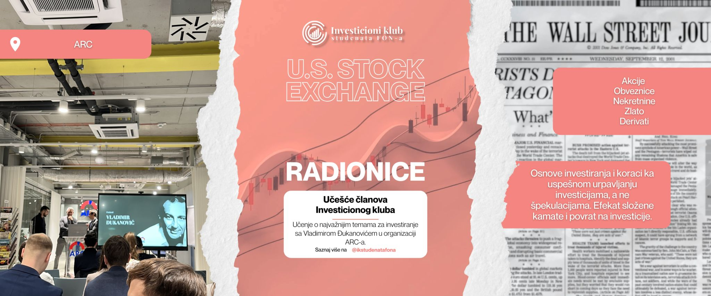
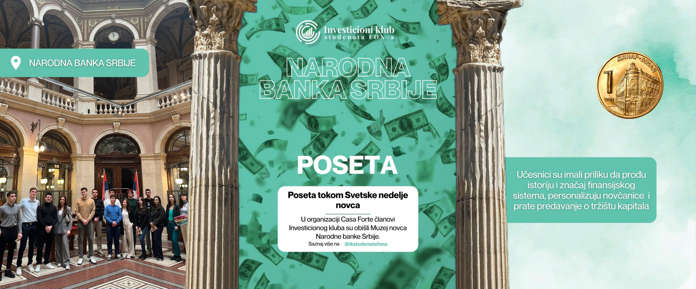
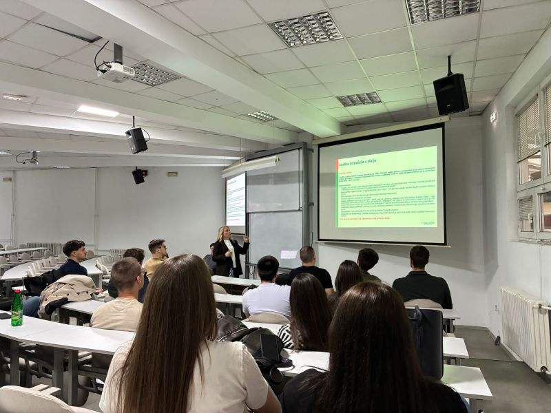
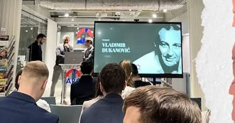

Radionice
Praktične radionice iz finansija i investiranja, u saradnji sa bankama i gostujućim predavačima.
Studentska organizacija na FON-u
Pružamo praktična znanja iz finansija, berzanskog poslovanja i bankarstva. Širimo finansijsku pismenost kroz radionice, takmičenja, posete institucijama i mentorstvo stručnjaka.
O nama
Investicioni klub studenata FON-a je studentska organizacija na Fakultetu organizacionih nauka koja studentima pruža praktična znanja iz finansija, berzanskog poslovanja i bankarstva i doprinosi širenju finansijske pismenosti.
Učimo kroz rad: radionice, takmičenja, posete finansijskim institucijama i mentorstvo stručnjaka iz industrije, profesora i saradnika sa univerziteta.

Program
Program koji spaja teoriju sa realnim tržištem i otvoren je za studente bez ikakvog predznanja.
Pridruži se programuPraktične radionice iz finansija i investiranja, u saradnji sa bankama i gostujućim predavačima.
Timovi upravljaju simuliranim portfoliom, analiziraju akcije i ETF-ove i mere se po realnom prinosu.
Odlasci u banke i finansijske institucije za uvid u struku iz prve ruke.
Rad sa stručnjacima iz industrije, profesorima i saradnicima sa univerziteta.
Redovne analize tržišta i hartija koje članovi predstavljaju i brane pred klubom.
Predavači iz banaka i sa univerziteta o analizi, tržištima i karijeri u finansijama.
Portfolio menadžment 2025/26
Timovi analiziraju akcije i ETF-ove, brane svoje predloge i mere se po realnom prinosu. Ovo su brojke prve sezone.
Ostvario Tim 1, treće mesto ukupno: Živojin Milić, analitičar, i Miloš Pavlović, menadžer.
Prijavi se za novu sezonuPojedine pozicije su delimično ili u potpunosti prodate ranije. Prikaz je informativan i ne predstavlja investicioni savet.
Projekti i radionice
Aktuelni i završeni projekti kluba. Klikni na završen projekat za detalje, rezultate i fotografije.
Prvi, uvodni projekat kluba: upoznavanje sa radom, osnove investiranja i plan za sezonu. Održava se na FON-u.

Prva sezona: četiri pozicije u plusu, najbolja +104,5%. Tim 1 osvojio treće mesto.
Detalji projekta →
Takmičenje u simuliranom trgovanju na Ekonomskom fakultetu. Ekipa kluba osvojila treće mesto.
Detalji projekta →Radionice i događaji
Predavanja u bankama, simulacije berze i gostujući stručnjaci. Evo šta smo radili u prvoj godini.

Takmičenje u simulaciji trgovanja akcijama u organizaciji ŠEFA, Link to the future. Naš tim se vratio sa nagradom.

Vrednovanje akcija kroz P/E, P/B i PEG racio.

Kupovina i prodaja akcija u realnom simulatoru.

Planiranje prihoda i rashoda, štednja i finansijski ciljevi kroz alat #ErsteZnali.

Tehnička i fundamentalna analiza, čitanje grafikona, indikatora i trendova.

U.S. Stock Exchange radionice: akcije, obveznice, zlato i osnove investiranja bez špekulacija.

Tokom Svetske nedelje novca, u organizaciji Casa Forte, obišli smo Muzej novca NBS uz predavanje o tržištu kapitala.

Pun amfiteatar na prvom predstavljanju: ciljevi, plan rada i prijave novih članova preko QR koda.
Momenti






Prevuci za još →
Saradnja


Ljudi
Klub su 2025. pokrenula dvojica studenata FON-a sa idejom da praktične finansije približe svim studentima.

Student finansija na FON-u sa iskustvom u specialised lending-u (project i real estate finance) u bankarskom sektoru i višegodišnjim radom na finansijskoj analizi u porodičnoj kompaniji. U klubu vodi fundamentalnu analizu i vrednovanje kompanija (DCF, multiples) i razvoj investicione discipline među studentima. Posebno ga zanimaju asset management, investiciono bankarstvo i private equity.

Student treće godine FON-a, smer Finansijski menadžment. Najviše ga zanima tržište kapitala: berza, investicioni fondovi i akcije. Sa timom je pokrenuo radionice, predavanja i projekte koji spajaju teoriju i iskustvo, u okviru prve studentske organizacije na FON-u koja se u potpunosti bavi praktičnim znanjem iz finansija.
Pridruži se
Otvoreni smo za studente svih fakulteta i svih nivoa znanja. Popuni prijavu ili nam piši na Instagramu.
Piši nam na InstagramOtvoreno za sve fakultete
Bez predznanja